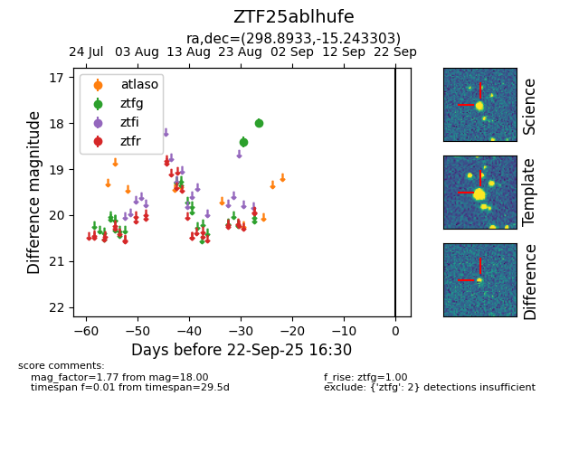

FINK: ZTF25ablhufe
Lasair: ZTF25ablhufe
ALeRCE: ZTF25ablhufe
ZTF25ablhufe (ztf,fink)
equatorial (ra, dec) = (298.8933,-15.24330)
galactic (l, b) = (26.0157,-20.91953)

last ztfg=18.00
2 ztfg detections